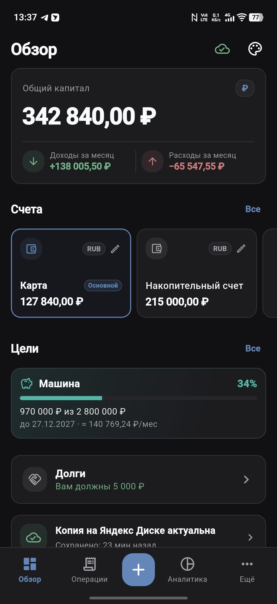
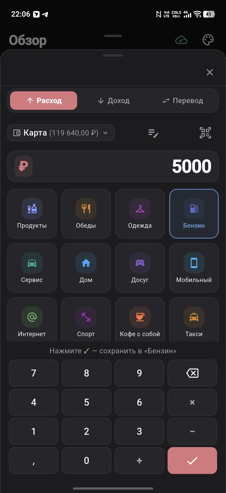
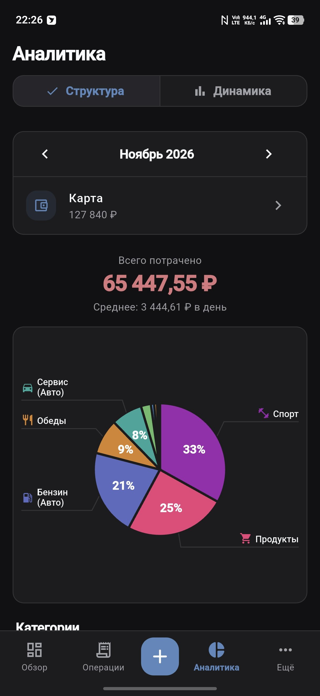

Никто не узнает, сколько вы тратите
Даже мы. Записи хранятся на вашем телефоне, копии — на вашем собственном Яндекс Диске.
Записывайте траты в пару касаний и смотрите, куда уходят деньги. Всё хранится только на вашем телефоне и на вашем Яндекс Диске — даже разработчик ничего не видит.
Основные возможности бесплатно · Есть подписка Plus · Без рекламы · Android

Зачем ещё один трекер
Учёт обычно бросают, когда он отнимает слишком много времени или сил. Мы сделали так, чтобы он не отнимал.
Что это даёт вам
Даже мы. Записи хранятся на вашем телефоне, копии — на вашем собственном Яндекс Диске.
Сохраните копию на Яндекс Диск, и на новом телефоне всё вернётся за пару нажатий.
Никаких баннеров и роликов. Сумма, категория — готово. А с виджета на рабочем столе — даже не открывая приложение.
Задайте лимит на кафе или продукты — приложение предупредит, когда потрачено 80%.
Сфотографируйте чек к операции — пригодится для гарантии или возврата. 10 фото бесплатно.
Запишите, кто сколько должен, — напомним за день до срока. Цели накоплений тоже есть: например, на машину.
Как это выглядит
Реальные скриншоты из приложения: без лишних экранов, перегруженных графиков и рекламных блоков.
Общий капитал, баланс по счетам, прогресс целей, долги и статус резервной копии.

Встроенный калькулятор и переводы между счетами. В Plus — ещё и сканер QR-кода кассового чека.

Структура и динамика по месяцам, фильтр по счетам и средний расход в день.
Приватность по архитектуре
Мы не обещаем «не смотреть в базу» — у нас просто нет сервера, на который уходят ваши финансы.
Честная модель
Базовая версия подходит для полноценного ежедневного учёта и не показывает рекламу.
Для тех, кому нужно больше масштаба и автоматизации. На эти деньги приложение и развивается.
Подписка пока не продаётся — подробные условия опубликуем до запуска.
Вопросы
Сохраните копию на Яндекс Диск — это бесплатно и делается одной кнопкой в приложении. На новом телефоне войдите через тот же Яндекс ID и восстановите копию. В Plus копия сохраняется сама каждый день.
Основные возможности бесплатны и без рекламы. Платная подписка Plus — для тех, кому нужно больше: больше счетов и целей, автоматическая копия, отчёты за любой период и другое. На эти деньги приложение и развивается.
Нет, приложение работает без интернета. Он нужен только для копий на Яндекс Диске.
Да, если ваше приложение умеет выгружать операции в файл CSV. Подходят не все приложения — после переноса сверьте балансы счетов. Перед переносом ФинансТрек сам сохраняет страховочную копию.
Пока только Android. В планах — без сроков — версия для компьютера, чтобы смотреть свои данные в браузере, и приложение для iPhone.
Приложение готовится к выходу. Хотите попробовать одним из первых?
Основные возможности бесплатно · Есть подписка Plus · Без рекламы · Android